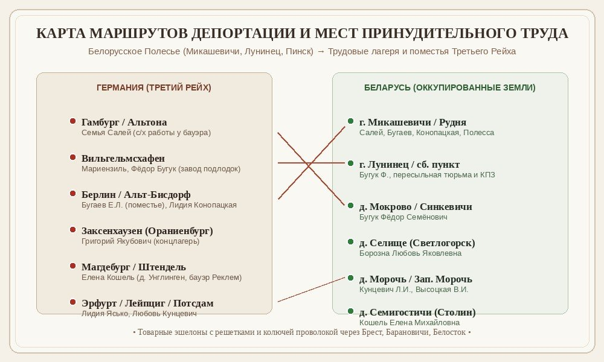

В годы Великой Отечественной войны с белорусской земли на принудительные каторжные работы в нацистскую Германию было насильно угнано почти 385 тысяч мирных жителей, в том числе 24 тысячи детей. Этот проект посвящен сохранению подлинных воспоминаний, фотографий и архивных свидетельств уроженцев Полесья и Беларуси.
Знак «OST» (Восточный рабочий)
Обязательный опознавательный знак расовой сегрегации, введенный нацистами в феврале 1942 года для советских граждан.
385 000
Граждан Беларуси угнано
на принудительные работы в Рейх
24 000
Несовершеннолетних детей
оторванных от матерей и дома
260+
Лагерей смерти в Беларуси
места массового уничтожения людей
13
Подлинных судеб узников
в нашем исследовательском архиве
📜
Краеведческое исследование и сохранение памяти
Материалы собраны благодаря многолетнему труду учителей и учащихся: преподавателя Натальи Ивановны Бобровник (СШ №2 г. Лунинца), учителя истории Корневой Е.А. и учащейся 5 класса Салей Софьи Владимировны (ГУО «Микашевичская гимназия им. В.И. Недведского»). Воспоминания очевидцев представлены в первозданном виде.
Живые голоса свидетелей
Судьбы белорусских остарбайтеров
Каждый человек — отдельная трагедия, мужество матери, слезы разлуки, голод и несокрушимая воля выжить.
Готовы проверить знания?
Перейдите в раздел интерактивной викторины по истории остарбайтерства в Беларуси. Нажмите кнопку «Викторина», чтобы ознакомиться с модулем!
Исторический контекст
Остарбайтеры: восточные рабочие Третьего Рейха
Правовые основы рабского труда, нацистская сегрегация, условия выживания и масштабы трагедии в Беларуси.
«Война и ее последствия легли тяжким бременем в истории белорусского народа. На основании Закона «О геноциде белорусского народа» 2022 года юридически признается геноцид населения Беларуси, совершенный нацистскими преступниками и их пособниками в годы Великой Отечественной войны. 22 июня объявлен Днём всенародной памяти жертв Великой Отечественной войны и геноцида белорусского народа. В Беларуси было создано более 260 лагерей смерти. Во время оккупации из нашей белорусской земли было вывезено почти 385 тысяч человек, в основном молодежь, а также 24 тысячи детей».
Кто такие «остарбайтеры»?
Остарбайтер (нем. Ostarbeiter — «восточный рабочий») — официальное обозначение людей, вывезенных немецкими оккупационными властями из оккупированных районов Советского Союза для использования в качестве подневольной рабочей силы в Третьем Рейхе.
Гитлеровская Германия из-за мобилизации мужчин на фронт испытывала острейший дефицит рабочих рук в промышленности и сельском хозяйстве. Обязательство советских граждан работать на Третий Рейх следовало из указа рейхсминистра оккупированных восточных территорий Альфреда Розенберга от декабря 1941 года.
По данным обвинительного заключения Нюрнбергского процесса, из СССР оккупантами было угнано около 5 миллионов мирных граждан, к которым добавлялись свыше 2 миллионов военнопленных.
Принудительные облавы и квоты
Местные органы оккупационной власти получали строгие квоты на отправку людей. Жители Беларуси всячески избегали мобилизации: уходили в партизаны, прятались в лесах и землянках. В ответ каратели устраивали войсковые облавы, оцепляя деревни, хватая молодежь прямо на улицах, церковных службах и у клубов.
Основной возраст депортированных: 16–26 лет, а также тысячи малолетних детей в возрасте от 6 до 14 лет.
Знак «OST» и расовая сегрегация
Первым зримым показателем расовой дискриминации советских остарбайтеров стал позорный знак «OST», учрежденный «Общими положениями о вербовке и использовании восточных рабочих» от 20 февраля 1942 года. Прямоугольная сине-белая нашивка была обязательна для ношения на груди с правой стороны.
Распоряжением рейхсфюрера СС Генриха Гиммлера от 30 июня 1942 года контакты остарбайтеров с немецким населением строго ограничивались:
Запрет свободы передвижения: «восточники» не имели права выходить за пределы лагеря или поместья бауэра без надзирателя или письменного разрешения хозяина.
Транспортные ограничения: остарбайтерам было запрещено находиться в пассажирских вагонах общественного транспорта и электричек.
Смертная казнь за побеги и «саботаж»: уклонение от работы, жалобы и попытки побега карались отправкой в штрафные концлагеря (Майданек, Заксенхаузен, Бухенвальд) или публичной казнью через повешение.
Скудная оплата и обман: номинально начислялась треть от зарплаты немецкого рабочего, но из неё вычитались расходы на содержание, в результате рабочие получали гроши или не получали ничего.
Работа на промышленных заводах
Предприятия концернов Krupp, Siemens, Opel, машиностроительные и судостроительные заводы (как «Купершмидт» в Вильгельмсхафене) скупали остарбайтеров партиями. 12-часовой рабочий день, 6–7 дней в неделю, казарменный режим под дулами охраны, баланда из брюквы и 150–300 грамм опилочного эрзац-хлеба.
Труд в поместьях бауэров
В сельском хозяйстве дети и женщины работали с 4–5 часов утра до заката: дойка коров, тяжелая ручная уборка камней с полей, сенокос, прополка и заготовка кормов. Спали в неотапливаемых кладовках или нарах с соломой, обувью служили деревянные колодки.
Освобождение, репатриация и возвращение на пепелища
Весной 1945 года при наступлении Красной Армии и союзных войск многие лагеря были брошены нацистами. Узников нередко гнали на изнурительные «марши смерти», расстреливая обессилевших.
После освобождения остарбайтеры проходили через советские проверочно-фильтрационные пункты (ПФП) и сборные лагеря на Эльбе и Одере. Многие юноши сразу встали в ряды действующей армии. По возвращении на Родину большинство ждало страшное зрелище: родные деревни (Микашевичи, Селище, Перуново, Мокрово, Зап. Морочь) были сожжены карателями дотла, родственники расстреляны или заживо сожжены. Людям пришлось строить землянки, бороться с голодом, болезнями и начинать мирную жизнь с нуля.
Личные истории
Судьбы белорусских остарбайтеров (13 человек)
Подлинные воспоминания, свидетельства и документы каждого из тринадцати земляков, вывезенных в нацистскую неволю.
🔍
География трагедии
Маршруты депортации и места рабского труда
Путь белорусских остарбайтеров из родных полесских сел через сборные пункты в лагеря и поместья Третьего Рейха.

Географические центры судеб из архива:
🇧🇾 Точки сбора в Беларуси
Микашевичи (Рудня): Семьи Бугаевых, Салей, Конопацких, Полесса. Лунинец: пересыльный КПЗ, железнодорожный клуб (медкомиссия). Брест и Барановичи: центральные пересыльные казармы и сортировка узников.
🇩🇪 Берлин и окрестности
Центр Берлина (Бранденбургские ворота): лагерь ресторатора фрау Пэрстки (Лидия Конопацкая). Альт-Бисдорф (станция Кёпеник): поместье бауэра Вирца (6-летний Евгений Бугаев). Заксенхаузен (Ораниенбург): концлагерь смерти (Григорий Якубович).
⚓ Северо-Западная Германия
Гамбург (пригород): поместье бауэра (Елена Салей с матерью и сестрами). Вильгельмсхафен (Мариензиль): трудовой лагерь и завод подводного флота (Фёдор Бугук). Фленсбург (граница Дании): лагерь узников при железной дороге (маленькая Кристина Полесса).
🌾 Центральные земли Рейха
Штендель (д. Унглинген): хозяйство бауэра Реклема (Елена Кошель). Виттенберг (д. Загост бай Пудлец): бауэр Вильям Вегнер (13-летняя Анна Круковская). Эрфурт и Лейпциг: поместья и лагеря (Лидия Ясько, Любовь Кунцевич).
Подлинные свидетельства
Полный фотоархив и документы (34 единицы)
В экспозиции представлены абсолютно все фотографии, архивные справки, удостоверения и памятные знаки из прикрепленных материалов.
⏳
Викторина
пока что пусто
Вопросы викторины появятся здесь, как только вы их пришлете. Раздел сайта и интерактивная страница полностью готовы к добавлению ваших вопросов.